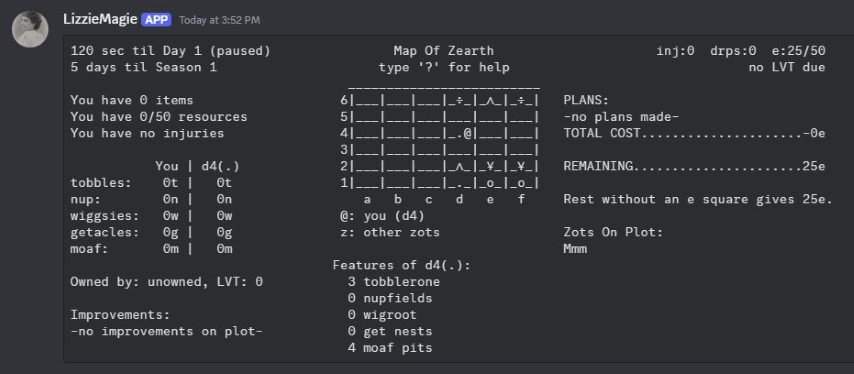

My name is Max Clark. I was born in 1986, so who knows how old I am when you're reading this, but it will be greater than 38 years. I grew up in suburban, southern California and I remain conflicted about comma usage.
"This is how you do comments in html? idk, fake spam honey pot:" johndough@gmail.com
Discord: maaaaxaxa
The biggest, realest game I ever made was a co-op roguelike called Flock of Dogs.
If you're interested in my Georgist digital board game, join this Discord server and start chatting with the 'LizzieMagie' bot (she's probably not available tho, tbh).

I've made some other game jam games and a few prototype board games. You can access some of them on my Itch page.
On New Year's Eve of 2021, I read a book review of Progress & Poverty, which is a book about taxes. And oh boy...feels like you won't believe me, but it was life changing. ...I don't know how to not come on strong. I can only say that I believe financial injustice is the deepest injustice. I'm persuaded that the root mechanism that makes wage slavery both legal and prevalent is allowing land to be held in fee simple with either no land tax or a negligible amount ("land" here includes all of nature's bounty). Land was not created by humans, it is necessary for all productive work, and it is scarce. I blog about Henry George and the Land Value Tax here: Almost Infinite.
Of course, and you may now be thinking, even if there's a magic policy, how ever can you persuade our politicians to implement such a thing?
I'm not sure, but I'm trying to figure it out.
A Georgist introduced me to the idea of sortition democracy. It is the formation of legislative bodies by the drawing of lots. Typically, these groups would meet for a specified number of meetings and be confined to addressing a single issue. I've read Terry Bouricius's sequence of blogs on sortition, The Trouble With Elections, and been convinced this is a needed reform.